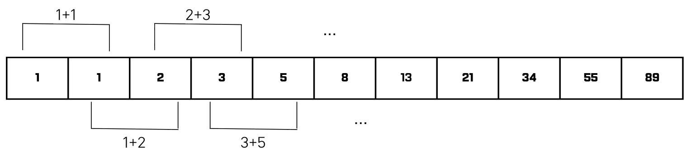
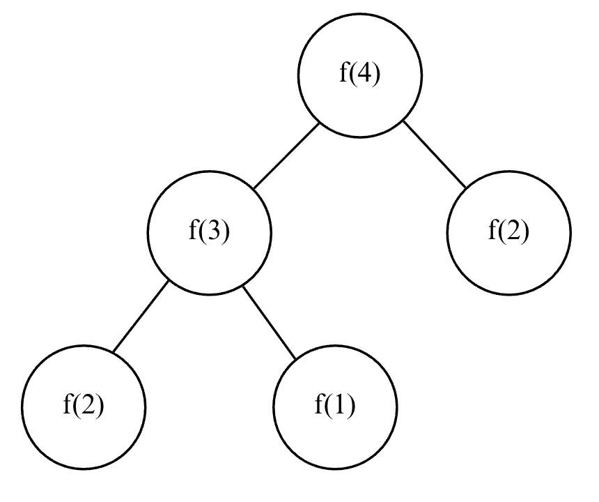
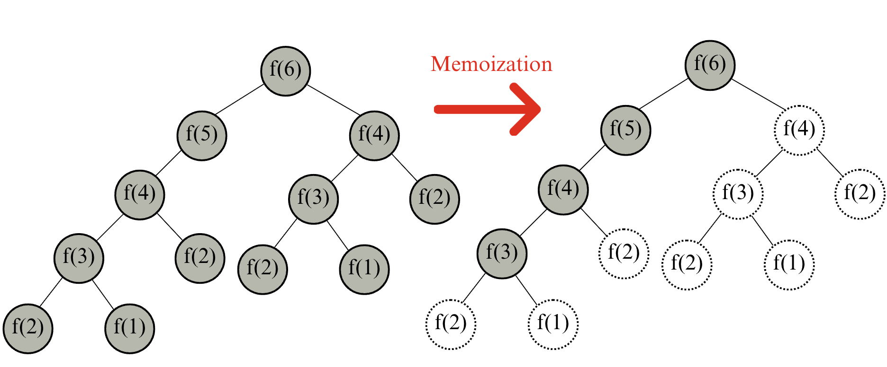

Lecture 4-1. Dynamic Programming#
컴퓨터는 연산 속도에 한계가 있고, 메모리 공간을 사용할 수 있는 데이터의 개수도 한정적이다. 따라서, 연산 속도와 메모리 공간을 최대한 효율적으로 활용하는 알고리즘을 작성해야한다. 다만, 어떤 문제는 메모리 공간을 약간 더 사용하면 연산 속도를 비약적으로 증가시킬 수 있는 방법이 있다. 대표적으로 이번 장에서 다루는 다이나믹 프로그래밍 (Dynamic Programming, 동적 계획법)기법이다.
DP 조건#
DFS를 배울 때, 피보나치 수열을 구현하는 방법을 배웠다. 피보나치 수열은 다음 그림과 같은 형태로 끝없이 이어진다.

점화식을 통해 인접한 항들 사이의 관계식을 의미하는데, 예를 들어 수열 \({a_{n}}\)이 있을 때 수열에서의 각 항을 \(a_{n}\)이라고 부른다고 가정하자. 우리는 점화식을 통해 현재의 항을 이전의 항에 대한 식으로 표현할 수 있다. 예를 들어, 피보나치 수열의 점화식은 다음과 같이 표현할 수 있다.
\(a_{n+2} = a_{n} + a_{n+1}, a_{1} =1, a_{2} = 2\)
위와 같은 점화식은 인접 3항간 점화식이라고 부르는데, 인접한 총 3개의 항에 대해서 식이 정의되기 때문이다.
프로그래밍에서는 이러한 수열을 배열이나 리스트로 표현할 수 있다. 수열 자체가 여러 개의 수가 규칙에 따라서 배열된 형태를 의미하는 것이기 때문이다. 파이썬에서는 리스트 자료형이 이를 처리하고, C/C++ 와 자바에서는 배열을 이용해 이를 처리한다.
위와 같은 점화식을 실제로 어떻게 구현할 수 있을까? n번째 피보나치 수를 f(n)이라고 표현할 때 4번째 피보나치 수 f(4)를 구하려면 다음과 같이 함수 f를 반복해서 호출할 것이다. 그런데 f(2)와 f(1)은 항상 1이기 때문에 f(1)이나 f(2)를 만났을 때는 호출을 정지한다.

수학적 점화식을 프로그래밍으로 표현하려면 재귀 함수를 사용하면 간단하다. 예시를 소스코드로 바꾸면 다음과 같다.
# 피보나치 함수(Fibonacci Function)을 재귀함수로 표현
def fibo(x):
if x == 1 or x == 2:
return x
return fibo(x-1) + fibo(x-2)
print(fibo(4))
피보나치 수열의 소스코드를 위와 같이 작성하면 문제가 생길 수 있는데, f(n) 함수에서 n이 커지면 커질수록 수행 시간이 기하급수적으로 늘어나기 때문이다. 그림을 보면 동일한 함수가 반복적으로 호출되는 것을 알 수 있다. 이미 한 번 계산했지만, 계속 호출할 때마다 계산하는 것이다. 이처럼 피보나치 수열의 점화식을 재귀 함수를 사용해 만들 수 는 있지만, 단순히 매번 계산핟로로고 하면 문제를 효율적으로 해결할 수 없다. 이러한 문제는 다이나믹 프로그래밍을 사용하면 효율적으로 해결할 수 있다. 하지만 다이나믹 프로그래밍을 항상 사용할 수는 없으며, 다음 조건을 만족할 때 사용할 수 있다.
DP 문제 조건
큰 문제를 작은 문제로 나눌 수 있다.
작은 문제에서 구한 정답은 그것을 포함하는 큰 문제에서도 동일하다.
피보나치 수열은 위의 조건을 만족하는 대표 문제로, 이 문제를 메모이제이션 (Memoization) 기법을 사용해서 해결해보자. 메모이제이션은 다이나믹 프로그래밍을 구현하는 방법 중 한 종류로, 한 번 구한 결과를 메모리 공간에 메모해두고 같은 식을 다시 호출하면 메모한 결ㄹ과를 그대로 가져오는 기법을 의미한다. 메모이제이션은 값을 저장는 방법이므로 캐싱 (Caching)이라고도 한다.
메모이제이션의 구현은 단순히, 한 번 구한 정보를 리스트에 저장하는 것이다. 다이나믹 프로그래밍을 재귀적으로 수행하다가 같은 정보가 필요할 때는 이미 구한 정답을 그대로 리스트에서 가져오면 된다.
# 한 번 계산된 결과를 메모이제이션(Memoization)하기 위한 리스트 초기화
d = [0] * 100
# 피보나치 함수 (Fibonacci Function) 를 재귀함수로 구현 (탑다운 다이나믹 프로그래밍)
def fibo(x):
# base case
if x == 1 or x == 2:
return 1
# 이미 계산한 적 있는 문제라면 그대로 반환
if d[x] != 0:
return d[x]
# 아직 계산하지 않은 문제라면 점화식에 따라서 피보나치 결과 반환
d[x] = fibo(x-1) + fibo(x-2)
return d[x]
print(fibo(99))
DP 2가지 구현 방식#
정리하자면, 다이나믹 프로그래밍이란 큰 문제를 작게 나누고, 같은 문제라면 한 번씩만 풀어 문제를 효율적으로 해결하는 알고리즘 기법이다. 다이나믹 프로그래밍과 분할 정복 (Divide and Conquer)의 차이점은 다이나믹 프로그래밍은 문제들이 서로 영향을 미치고 있다는 점이다. 즉, 둘 다 큰 문제를 작은 문제로 쪼개 푸는 건 비슷하지만, 차이는 부분 문제의 관계에 있습니다.
분할 정복 (예: 퀵정렬, 병합정렬)
문제를 작은 문제로 나눔 → 각각 독립적으로 해결 → 결과를 합쳐서 큰 문제 해결.
각 부분 문제는 서로 영향을 주지 않음.
예시: merge sort에서 왼쪽 배열 정렬과 오른쪽 배열 정렬은 서로 간섭 없음.
다이나믹 프로그래밍 (예: 피보나치, 최단 경로)
문제를 작은 문제로 나눔 → 작은 문제들의 해가 서로 겹치거나 공유됨.
한 번 계산한 결과를 저장해놔야 효율적.
예시: 피보나치 수열을 단순 분할 정복으로 풀면 같은 계산을 수없이 반복하지만, DP로 풀면 한 번 계산한 값을 저장해서 재사용함.
DP 개념 정리
큰 문제를 작은 문제로 나눔: 문제를 세분화해서 풀기
중복되는 작은 문제는 “한 번만” 계산: 계산이 반복되면 결과를 저장 (메모이제이션/테이블화)해서 재사용
즉, “중복되는 부분 문제 (overlapping subproblems)”를 효율적으로 처리하는 방식
아래 그림을 보면, f(6)을 호출할 때는 다음 그림처럼 색칠된 노드만 방문하게 되어, 효율적으로 문제를 풀 수 있다.

메모이제이션#
메모이제이션은 때에 따라서 다른 자료형, 예를 들어 사전 (Dict) 자료형을 이용할 수도 있다. 사전 자료형은 수열처럼 “연속적이지 않은 경우”에 유용한데, 예를 들어 \(a_{n}\)을 계산하고자 할 때 \(a_{0} ~ a_{n-1}\)모두가 아닌 일부의 작은 문제에 대한 해답만 필요한 경우가 존재할 수 있다. 이럴 때에는 사전 자료형을 사용하는게 더 효과적이다.
또한 가능하다면 재귀 함수를 이용하는 탑다운 방식보다는 보텀업 방식으로 구현하는 것을 권장한다. 시스템상 재귀 함수의 스택 크기가 한정되어 있을 수 있기 때문이다. 이 경우 sys 라이브러리에 포함되어 있는 setrecursionlimit() 함수를 호출하여 재귀 제한을 완화할 수 있다는 점만 기억하자.
시간복잡도#
피보나치 수열 알고리즘의 시간 복잡도는 O(N)이다. 왜냐하면 f(1)을 구한 다음 그 값이 f(2)를 푸는 데 사용도기, f(2)의 값이 f(3)를 푸는데 사용되는 방식으로 이어지기 때문이다. 한 번 구한 결과는 다시 구해지지 않는다.
Top-Down 방식#
이처럼 재귀 함수를 이용하여 다이나믹 프로그래밍 소스 코드를 작성하는 방법을, 큰 문제를 해결하기 위해 작은 문제를 호출한다고 하여 top-down 방식이라 말한다.
Bottom-Up 방식#
단순히 반복문을 이용하여 소스 코드를 작성하는 경우 작은 문제부터 차근차근 답을 도출한다고 하여 Bottom-Up 방식이라고 말한다.
# 앞서 계산된 결과를 저장하기 위한 DP 테이블 초기화
d = [0] * 100
# 첫 번째 피보나치 수와 두 번째 피보나치 수는 1
d[1] = 1
d[2] = 1
n = 99
# 피보나치 함수 반복문으로 구현
for i in range(3, n+1):
d[i] = d[i-1] + d[i-2]
print(d[n])
DP Table#
What you choose to store in your DP table (list, dict, array, etc.) is the most important desing decision in solving a DP problem.
DP is about state representation. DP works by breaking a big problem into smaller overlapping subproblems. To reuse solutions, you must define a state that fully describes a subproblem. That “state” is exactly what you store in the DP table.
How can we decide what to store? You should ask yourself 1. What subproblem do I need to solve repeatdly? and 2. What result of that subproblem helps me build the next one?. The first question deinfes the state and the next question is the value you should store.
DP table initialization
State (상태)
정의: “하위 문제 (Subproblem)”를 유일하게 결정”하는 최소한의 매개변수 (paramter), 좌표나 인덱스
목표: 겹치는 하위 문제가 생기도록 문제를 쪼개고, 그 하위 문제를 하나의 키(인덱스)로 표현.
디자인 규칙:
의존성이 1개면 i (예: 1D 수열)
두 대상의 접두사 비교면 (i, j) (예: 두 문자열, LCS)
구간 의존이면 (l, r) (interval DP, LPS)
격자면 (y, x)
트리면 node (+ 선택했는지 여부 같은 플래그)
배낭류 “용량(또는 합)” 이 핵심 인덱스
암기 팁:
what to store (저장값)
정의: 각 상태에 대해 “다음 단계 계산에 꼭 필요한 결과값”
유형: min/max, count(경우의 수), boolean (가능/불가), value (최적값), 확률/기댓값, 복원용 포인터 (prev/choice)
원칙: 점화식이 바로 사용하는 값만 저장
예시:
LIS -> “i에서 끝나는 최장 길이”
LCS -> “A[:i], B[:j]의 LCS 길이”
Word Break -> “s[:i] 분해 가능 여부”
Knapsack -> 용량 w에서의 최대 가치
Interweaving -> s1[:i], s2[:j]로 s[:i+j] 가능 여부
Transition (전이/점화식)
정의: 현재 상태를 더 작은 상태들로부터 만드는 점화식
형태:
선택 비교형:
dp[i] = max(dp[i-1], dp[i-2] + val[i])분기 합산형:
dp[i] += dp[i-w]매칭/불일치형(2D):
match ? 1+dp[i-1][j-1] : max(dp[i-1][j], dp[i][j-1])구간 분할형:
dp[l][r] = min/max over k (dp[l][k] + dp[k+1][r] + cost)
계산 순서: 점화식이 참조하는 더 작은 상태부터 채우기
Here is a handy “what to store” cheat-sheet for the most popular DP problems. each line tells you the state, what to store, and a one-line transition hint so you know why the storage works.
1. Sequence / Array DP#
sequence 1D DP
Fibonacci / Stair Climbing
State:
nStore: number of ways/value at
nTransition:
dp[n] = dp[n-1] + dp[n-2]Reference: LC 70 (Climbing Stairs), LC 509 (Fibonacci Number)
Maximum Subarray (Kadane)
State: end index
iStore: best sum of subarray ending at
iTransition:
dp[i] = max(a[i], dp[i-1] + a[i])Reference: LC 53 (Maximum Subarray)
House Robber
State: first
ihousesStore: max money using up to
iTransition:
dp[i] = max(dp[i-1], dp[i-2] + val[i])Reference: LC 198 (House Robber), LC 213 (House Robber II)
Longest Increasing Subsequence (LIS)
State: end index
iStore: LIS length ending at
iTransition:
dp[i] = 1 + max(dp[j]) for j<i & a[j]<a[i]Reference: LC 300 (LIS), LC 354 (Russian Doll Envelopes)
Partition Equal Subset / Subset Sum
State: capacity
sStore: reachable boolean at sum
sTransition:
dp[s] |= dp[s-w]Reference: LC 416 (Partition Equal Subset Sum), LC 494 (Target Sum)
2. Subsequence/String DP#
dp table
Longest Common Subsequence (LCS)
State:
(i, j)Store: LCS length of
A[:i]&B[:j]Transition: if match:
1+dp[i-1][j-1]elsemax(dp[i-1][j], dp[i][j-1])Reference: LC 1143 (LCS)
Edit Distance (Levenshtein)
State:
(i, j)Store: min edits to convert
A[:i]→B[:j]Transition:
min(replace, insert, delete)Reference: LC 72 (Edit Distance)
Longest Palindromic Subsequence (LPS)
State:
(l, r)Store: LPS length in
s[l..r]Transition: if
s[l]==s[r]→2+dp[l+1][r-1]elsemax(dp[l+1][r], dp[l][r-1])Reference: LC 516 (Longest Palindromic Subsequence)
Longest Palindromic Substring
State:
(l, r)Store: palindrome boolean or length
Transition:
dp[l][r] = (s[l]==s[r] && (r-l<2 || dp[l+1][r-1]))Reference: LC 5 (Longest Palindromic Substring)
Distinct Subsequences (count ways A→B)
State:
(i, j)Store: #ways
A[:i]formsB[:j]Transition:
dp[i][j] = dp[i-1][j] + (A[i-1]==B[j-1] ? dp[i-1][j-1] : 0)Reference: LC 115 (Distinct Subsequences)
3. Knapsack Family#
DP table
0/1 Knapsack
State:
(i, w)orwin 1DStore: max value at capacity
wTransition:
dp[w] = max(dp[w], dp[w-weight] + value)Reference: LC 474 (Ones and Zeroes)
Unbounded Knapsack / Coin Change (min coins)
State: capacity
wStore: min coins for
wTransition:
dp[w] = min(dp[w], dp[w-c] + 1)Reference: LC 322 (Coin Change)
Coin Change (count ways)
State: amount
aStore: #ways to make
aTransition:
dp[a] += dp[a-c]Reference: LC 518 (Coin Change II)
4. Grid DP#
DP table for Grid DP
Unique Paths (with obstacles)
State:
(i, j)Store: #ways to reach
(i, j)Transition:
dp[i][j] = (obstacle?0 : dp[i-1][j] + dp[i][j-1])Reference: LC 62 (Unique Paths), LC 63 (Unique Paths II)
Minimum Path Sum
State:
(i, j)Store: min cost to
(i, j)Transition:
dp[i][j] = grid[i][j] + min(dp[i-1][j], dp[i][j-1])Reference: LC 64 (Minimum Path Sum)
5. Interval DP#
DP table for Interval DP
Matrix Chain Multiplication
State:
(l, r)Store: min scalar multiplications for
l..rTransition: split at
kReference: LC 1547 (Minimum Cost to Cut a Stick)
Burst Balloons
State:
(l, r)open intervalStore: max coins from
(l, r)Transition: pick last balloon
kReference: LC 312 (Burst Balloons)
Palindrome Partitioning (min cuts)
State: prefix
iStore: min cuts for
s[:i]Transition:
dp[i] = min(dp[j]+1)for palindromics[j:i]Reference: LC 132 (Palindrome Partitioning II)
6. Tree DP#
DP table for Tree
Tree Diameter
State: node
uStore: longest downward path from
uTransition: combine two largest child depths
Reference: LC 543 (Diameter of Binary Tree), LC 124 (Binary Tree Max Path Sum)
Maximum Independent Set on Tree
State:
(u, take)Store: best sum if
uis taken or skippedTransition: if take
u, skip children; else best of childrenReference: classic Tree DP (not direct LC, but similar to LC 337 House Robber III)
Summary#
Summary for DP table
Quick rules for “what to store”
Smallest subproblem that lets you extend: e.g. LIS needs “best ending at i”, not “global max so far”.
Exactly the quantity needed by the recurrence: value, count, boolean, min/max, probability, etc.
Dimensions match dependencies: if you need two indices (like two strings), your state likely has two; if intervals matter, store by
(l, r); on trees, store per-node (optionally with a flag)Space-optimize later: once the state is right, compress (1D knapsack, rolling rows in grides, etc.)
DP source code
# 6개 checklist
# 1) State: dp[...]
# 2) What to store: min/max/count/bool/value (필요시 prev/choice)
# 3) Base case init
# 4) Fill order: 작은 상태 → 큰 상태
# 5) Transition
# 6) Read answer
def solve(...):
# 예: 2D (i, j)
dp = [[INF]* (n+1) for _ in range(m+1)]
# base cases
dp[0][0] = 0
for i in range(0, m+1):
for j in range(0, n+1):
if i>0:
dp[i][j] = min(dp[i][j], f(dp[i-1][j], ...))
if j>0:
dp[i][j] = min(dp[i][j], g(dp[i][j-1], ...))
return dp[m][n]
예시 문제#
1. 1D DP#
Climbing Stairs#
문제 - Leetcode 70
Bottom-up 방식으로 쉽게 풀 수 있다. 현재 선택지는 +1, +2칸이므로 f(n)을 계산하는 경우 n-1 칸에서 한 칸 오른 것 즉, f(n-1)과 n-2칸 에서 +2칸 오른 것 f(n-2)를 더한 것과 동일하다.
class Solution:
def climbStairs(self, n: int) -> int:
'''
1 = 1
N=2
1 + 1
2
N = 3
1 + 1 + 1
1 + 2
2 + 1
N = 4
1 + 1 + 1 + 1
1 + 2 + 1
2 + 1 + 1
1 + 1 + 2
2 + 2
즉, f(N) = f(N-1) + f(N-2)
f(N-1)에서는 1만 더하면 되고 f(N-2)는 2를 더하면 됨.
'''
dp = [0] * (n+1)
if n <=2:
return n
dp[1] = 1
dp[2] = 2
for i in range(3, n+1):
dp[i] = dp[i-1] + dp[i-2]
return dp[n]
if __name__ == '__main__':
s = Solution()
print(s.climbStairs(3))
House Robber#
문제 - Leetcode 198
from typing import List
class Solution:
def rob(self, nums: List[int]) -> int:
n = len(nums)
if n == 1:
return nums[0]
dp = [0] * n
dp[0] = nums[0]
dp[1] = max(nums[0], nums[1]) # 해당 index까지 최고 dp 값 저장
max_val = dp[1]
for idx in range(2, n):
dp[idx] = max(dp[idx-2] + nums[idx], dp[idx-1]) # 해당 index까지 최고 dp 값 저장
max_val = max(max_val, dp[idx])
return max_val
if __name__ == '__main__':
# nums = [10, 1 , 2 , 3] # 13
# nums = [10, 1 , 2 , 3, 12] # 24
# nums = [1, 2, 3, 1] # 4
# nums = [2, 7, 9, 3, 1] # 12
nums = [1, 3, 1, 3, 100] # 103
s = Solution()
print(s.rob(nums))
Word Break#
문제 - Leetcode 139
Bottom-Up
아이디어:
dp[i] = s[:i]가 사전 단어들로 정확히 분해 가능하면 True.시작 dp[0] = True (빈 문자열은 분해 가능)
각 i에 대해, 어떤 j < i가 있어 dp[j] == True 이고 s[j:i] 가 단어면 dp[i] = True.
효율 팁
단어들을 set으로 만들어 O(1) 조회.
단어 길이의 최대값 L = max(len(w) for w in wordDict)를 구해 j를 i-L .. i-1로만 확인(큰 가지치기).
from typing import List
class Solution:
def wordBreak(self, s: str, wordDict: list[str]) -> bool:
word_set = set(wordDict)
max_len = max(map(len, word_set)) if word_set else 0
n = len(s)
dp = [False] * (n + 1)
dp[0] = True
for r in range(1, n + 1):
# r에서 최대 max_len만큼만 거슬러 올라가 보기
start = max(0, r - max_len)
for f in range(r - 1, start - 1, -1):
if dp[f] and s[f:r] in word_set:
dp[r] = True
break
return dp[n]
if __name__ == '__main__':
# s = "abc"; wordDict=["a", "b", "c"]
# s = "leetcode"; wordDict = ["leet", "code"]
# s = "applepenapple"; wordDict = ["apple", "pen"]
# s = "catsandog"; wordDict = ["cats", "dog", "sand", "and", "cat"]
s = "catsand"; wordDict = ["cats", "dog", "sand"]
sol = Solution()
print(sol.wordBreak(s, wordDict))
Coin Change#
문제 - Leetcode 322
canonical(정규)한 경우에 가능하다. 예를 들어, 각 동전이 이전 동전의 배수인 경우 (예: [1, 2, 4, 8..])#from typing import List
class Solution:
def in_range(self, cur_idx, dif):
return (cur_idx - dif) > 0
def coinChange(self, coins: List[int], amount: int) -> int:
MAX = 99999999
dp = [99999999] * (amount+1)
dp[0] = 0 # basecase, when amount = 0
for cur_dp_idx in range(1, amount+1):
for coin in coins:
if cur_dp_idx - coin == 0: # 현재 idx에 해당하는 coin이 있으면 무조건 1개로 끝낼 수 있음.
dp[cur_dp_idx] = 1
if self.in_range(cur_dp_idx, coin):
# 가지고 있는 코인 '하나' 써서 만든 거 (dp[cur_dp_idx-coin] + 1)랑 이전 dp (dp[cur_dp_idx])랑 비교
dp[cur_dp_idx] = min(dp[cur_dp_idx], dp[cur_dp_idx-coin]+1)
# print(dp)
return dp[amount] if dp[amount] != MAX else -1
if __name__ == "__main__":
# coins = [1, 2, 5, 10]; amount = 11 # 2
# coins = [1, 2, 5, 10]; amount = 11 # 3
# coins = [2]; amount = 3
coins = [1]; amount = 0
# coins = [1, 2, 5]; amount = 20
# coins = [186,419,83,408]; amount = 6249 # 20개
sol = Solution()
print(sol.coinChange(coins, amount))
Longest Increasing Subsequences#
문제 - Leetcode 300
O(\(N^2\)) solution
class Solution:
def lengthOfLIS(self, nums: List[int]) -> int:
n = len(nums)
dp = [1] * n # every single char.length = 1
max_val = dp[0]
for idx in range(1, n):
for k in range(idx-1, -1, -1):
if nums[k] < nums[idx]:
dp[idx] = max(dp[k] + 1, dp[idx])
max_val = max(dp[idx], max_val)
# print(dp)
return max_val
bisect library, 위치 찾기 in LIS problem
bisect는 파이썬 표준 라이브러리로, 정렬된 리스트에서 이진 탐색을 통해 원소를 삽입하거나 위치를 찾을 때 사용합니다.
정렬은 미리 되어 있어야 하고, 삽입 위치를 계산해줄 뿐 자동으로 정렬을 유지하지는 않습니다.
복잡도: O(logN)
bisect_left(arr, x)
정렬된 리스트 arr에서 x가 들어갈 가장 왼쪽 인덱스를 반환.
즉, x 이상의 원소가 처음 나타나는 위치, 정렬을 유지하면서 넣을 수 있는 곳
만약, arr=[1,2,3]이고 num=10이면, returned idx는 3임. 즉, idx는 0~len(arr)가 될 수 있으므로 처리 잘 해야함.
사용 예시:
정렬 리스트에서 lower bound (하한값) 찾을 때
중복 원소가 있는 경우, num의 첫 등장 위치가 필요할 때
정렬 삽입 시 오름차순 유지할 때
import bisect
a = [1, 2, 4, 4, 8]
print(bisect.bisect_left(a, 4)) # 2 (왼쪽 4의 위치)
print(bisect.bisect_left(a, 5)) # 4 (8이 있는 자리)
bisect_right(arr, x)
정렬된 리스트 arr에서 x가 들어갈 가장 오른쪽 인덱스를 반환
즉, x보다 큰 원소가 처음 나타나는 위치
print(bisect.bisect_right(a, 4)) # 4 (오른쪽 4 다음 위치)
print(bisect.bisect(a, 4)) # 동일 (alias)
복잡도: O(logN) (탐색) + log(N) (리스트에 삽입, 뒤 원소를 밀어야 함.)
insort_left(arr, x)
bisect_left로 위치를 찾은 뒤 x를 리스트에 삽입
정렬된 상태 유지
bisect.insort_left(a, 4)
print(a) # [1, 2, 4, 4, 4, 8]
insort_right(arr, x)
bisect_right로 위치를 찾은 뒤 x를 리스트에 삽입
정렬된 상태 유지
b = [1, 2, 4, 4, 8]
bisect.insort_right(b, 4)
print(b) # [1, 2, 4, 4, 4, 8]
O(NlogN) solution
tails[k] = “길이가 k+1인 증가 부분수열 중 마지막 값의 최소값” 을 저장한다. 배열을 왼 -> 오 순서로 보며, 매 원소에 대해 i = lower_bound(tails, x) (즉, tails에서 x이상이 처음 나오는 위치)를 찾고 i == len(tails)면 tails뒤에 x를 붙이고, 아니면 tails[i] = x로 더 작은 끝값으로 갱신한다. 이렇게 하면 tails의 길이가 곧 LIS의 길이가 됨. 만약 비내림 (= 증가 허용, non-decreasing)인 경우에는 bisect_right을 사용하여 같은 값은 다음 길이로 넘겨 중복을 허용한다. cf) So “patience sorting” is not about fully sorting the array — it’s about simulating the pile-building strategy from the patience card game, which indirectly reveals LIS length.#import bisect
class Solution:
def lengthOfLIS(self, nums: List[int]) -> int:
tails = [] # 길이가 idx+1인 수의 가장 작은 수를 저장
for num in nums:
# strictly increasing
idx = bisect.bisect_left(tails, num)
if idx == len(tails):
tails.append(num)
else:
tails[idx] = num
return len(tails)
if __name__ == "__main__":
nums = [10, 9, 2, 5, 3, 7, 101, 18]
# nums = [0, 1, 0, 3, 2, 3] # 4
# nums = [7, 7, 7] # 1
# nums = [7] # 1
sol = Solution()
print(sol.lengthOfLIS(nums))
bisect_left implementation
Boundary definition with
while l < r(Step 1)Always maintain the interval [l, r) (left-inclusive, right-exclusive)
ex. arr = [7], x = 7
the final value of l = 0
the interval [l, r) changes as follows: [0, 1) -> [0, 0) return 0
ex. arr = [1, 7, 8], x = 7
the final value of l = 1
the interval [l, r) changes as follows: [0, 3) -> [0, 1) -> [1, 1) return 1
ex. arr = [1, 2, 5, 8], x = 5
the final value of l = 2
the interval [l, r) changes as follows: [0, 4) -> [0, 2) -> [2, 2) return 2
ex. arr = [1, 2, 2, 2, 3, 4], x = 2
the final value of l = 1
the interval [l, r) changes as follows: [0, 6) -> [0, 3) -> [0, 2) -> [0, 1) -> [1, 1) return l=1
if the midpoint number is equal to the target x, it should excluded from the possible interval where the target x can be inserted
lis always a candidate position, andris always the boundary (one step beyond the last possible position).The search terminates when
l == r→ no interval left to search.l= “the minimum candidate position to insert”r= “the first position where insertion is impossible (exclusive right boundary)”
When they become equal, the insertion position is fixed.
Hence the condition must always be
while l < r.If we use
while l <= r, thenrmust be treated as inclusive, and the code logic changes.
Example
arr = [2, 5, 6],x = 4Initial:
l = 0,r = 3,mid = 1Think of
midas the current comparison candidate.
Step 1:
mid = 1,arr[mid] = 5 >= 4→r = midFor
bisect_left, when the target is equal to or smaller than the midpoint, we shrink the search interval to the left.
Step 2:
mid = 0,arr[mid] = 2 < 4→l = mid + 1 = 1Termination:
l = 1,r = 1→return l (1)Indeed, inserting
4atarr[1]keeps the array sorted.
def bisect_left(arr, x):
l = 0, r = len(arr) # r = right-exclusive boundary
while l < r:
mid = (l + r) // 2
if arr[mid] >= x:
r = mid
else:
l = mid + 1
return l # l = the 'first' insertion position of x
import bisect
def lis_with_path(nums):
n = len(nums)
tails = [] # 값 기준(이분탐색용)
tails_idx = [] # 각 길이의 꼬리 원소가 있는 nums의 인덱스
prev_idx = [-1] * n # 각 원소의 LIS에서의 이전 원소 인덱스
for i, x in enumerate(nums):
pos = bisect.bisect_left(tails, x)
if pos == len(tails):
tails.append(x)
tails_idx.append(i)
else:
tails[pos] = x
tails_idx[pos] = i
if pos > 0:
prev_idx[i] = tails_idx[pos - 1]
# 복원
lis_len = len(tails)
k = tails_idx[-1]
seq = []
while k != -1:
seq.append(nums[k])
k = prev_idx[k]
seq.reverse()
return lis_len, seq
Number of LIS#
문제 - Leetcode 673
solution O(\(N^2\))
len[i]: length of the LIS ending at i, cnt[i]: the number of LIS of that length that end at i#from collections import defaultdict
class Solution:
def findNumberOfLIS(self, nums):
n = len(nums)
if n <= 1:
return n
length = [1]*n
count = [1]*n
for i in range(n):
for j in range(i):
if nums[j] < nums[i]:
if length[j] + 1 > length[i]:
length[i] = length[j] + 1
count[i] = count[j]
elif length[j] + 1 == length[i]:
count[i] += count[j]
L = max(length)
return sum(c for l, c in zip(length, count) if l == L)
Is Subsequence#
문제 - Leetcode 392
Time complexity and Algorithm Implementation
Constraints:
0 <= s.length <= 100
0 <= t.length <= \(10^4\)
s and t consist only of lowercase English letters
Based on constraints stated above, Follow up: Suppose there are lots of incoming s, say \(s_{1}, s_{2}, s{3}, ..., s_{k}\) where k >= \(10^9\), and you want to check one by one to see if t has its subsequence. In this scenario, how would you change your code?
Single query: Use tow pointers. Time
O(|s| + |t|), space O(1)Follow-up (many s): Preprocess
tPositions + binary search: preprocess
O(|t|), per queryO(|s|log|t|)
single query solution
class Solution:
def isSubsequence(self, s: str, t: str) -> bool:
i = 0
for ch in t:
if i < len(s) and s[i] == ch:
i += 1
return i == len(s)
Follow-up (many s) solution
import bisect
from collections import defaultdict
class Solution:
def preprocess_positions(self,t: str):
pos = defaultdict(list)
for i, ch in enumerate(t):
pos[ch].append(i)
return pos
def isSubsequence(self, s: str, t:str) -> bool:
pos = self.preprocess_positions(t)
cur = -1
for ch in s:
lst = pos.get(ch, [])
j = bisect.bisect_left(lst, cur + 1)
if j == len(lst):
return False
cur = lst[j]
return True
2. Multidimensional DP#
Russian Doll Envelope#
문제 - Leetcode 354
O(\(N^2\)) solution: Time limit error
class Solution:
def compare(self, w1, h1, w2, h2):
return w1 < w2 and h1 < h2 # 같을 때도 다 False
def maxEnvelopes(self, envelopes: List[List[int]]) -> int:
envelopes.sort()
# print(envelopes)
n = len(envelopes)
dp = [1]*n
max_val = dp[0]
for idx in range(n):
for prev in range(idx-1, -1, -1):
w1, h1 = envelopes[prev][0], envelopes[prev][1]
cur_w, cur_h = envelopes[idx][0], envelopes[idx][1]
if self.compare(w1, h1, cur_w, cur_h):
dp[idx] = max(dp[prev] + 1, dp[idx])
max_val = max(dp[idx], max_val)
# print(dp)
return max_val
O(nlogn) solution
You’re given envelopes as pairs (width, height). One envelope can fit into another only if both dimensions are strictly larger: (w1 < w2) and (h1 < h2). If we sort the envelopes by width in ascending order, and for equal widths, height in descending order, after sorting, we can find the LIS by just comparing heights, which means the answer is the length of the strictly increasing LIS on the height array.
If two envelopes share the same width, they cannot nest regardless of height. Sorting those ties by descending height ensures they cannot appear as an increasing pair in the LIS (because a larger height comes before a smaller one), so LIS won’t fasely count them.
for example, [(5,4), (6,4), (6,7), (6,5), (2,3), (7,6)]
if we sort the width and height in ascending order and using bisect_left() function, [(2,3), (5,4), (6,4), (6,5), (6,7), (7,6)], In the longest LIS, (6,4) will be included in LIS as a consequences of using bisect_left().
width는 오름차순, height는 내림차순 (동일한 width끼리는 겹치지 않도록)-> 이렇게 하면 같은 width끼리 height가 증가로 잡히는 일을 막아서, 나중에 height만 보고 LIS를 구해도 “width 증가” 조건이 자동으로 보장됨. height 배열만 뽑아 LIS를 하면 LIS는 이진 탐색으로 tails 배열을 유지하여 O(NlogN)에 가능#from bisect import bisect_left
class Solution:
def maxEnvelopes(self, envelopes):
# 1) 정렬: w 오름차순, w 같으면 h 내림차순
envelopes.sort(key=lambda x: (x[0], -x[1]))
# 2) height만 뽑아서 LIS (strictly increasing)
tails = []
for _, h in envelopes:
i = bisect_left(tails, h) # h가 들어갈 위치
if i == len(tails):
tails.append(h)
else:
tails[i] = h
return len(tails)
Triangle#
문제 - Leetcode 120
Memory Space O(N)
class Solution:
def minimumTotal(self, triangle: List[List[int]]) -> int:
num_rows = len(triangle)
dp = [] # dp[row] = store the minimum path sum at row with 2D array
for row in triangle:
dp.append([0]*(len(row)))
dp[0] = [triangle[0][0]]# base case
# print(dp)
for row in range(1, num_rows):
for i in range(0, row+1):
# 오른쪽위만 있는 경우
if i-1 < 0:
# print(type(row), type(i), type(dp), type(triangle))
# print(row, i, dp, triangle)
dp[row][i] = dp[row-1][i] + triangle[row][i]
# 왼쪽 위만 있는 경우 (row에는 index row까지만 숫자가 존재함.)
elif i > (row-1):
dp[row][i] = dp[row-1][i-1] + triangle[row][i]
# 둘다 있는 경우
else:
dp[row][i] = min(dp[row-1][i-1], dp[row-1][i]) + triangle[row][i]
return min(val for val in dp[num_rows-1])
Minimum Path Sum#
문제 - Leetcode 64
O(MxN) time complexity solution
class Solution:
def minPathSum(self, grid: List[List[int]]) -> int:
m = len(grid)
n = len(grid[0])
dp = [[0]*n for _ in range(m)]
# directions
DIRS = [(1, 0), (0, 1)]
# base case : edges
# the lowest right dp[m-1][n-1]
dp[m-1][n-1] = grid[m-1][n-1]
# 1. bottom line
for x in range(n-2, -1, -1):
dp[m-1][x] = dp[m-1][x+1] + grid[m-1][x]
for y in range(m-2, -1, -1):
dp[y][n-1] = dp[y+1][n-1] + grid[y][n-1]
# inside the dp grids
for y in range(m-2, -1, -1):
for x in range(n-2, -1, -1):
dp[y][x] = min(dp[y+DIRS[0][0]][x+ DIRS[0][1]], dp[y+DIRS[1][0]][x + DIRS[1][1]]) + grid[y][x]
return dp[0][0]
Unique Path II#
문제 - Leetcode 63
O(MN) time, O(MN) memory
class Solution:
def uniquePathsWithObstacles(self, obstacleGrid: List[List[int]]) -> int:
M = len(obstacleGrid); N=len(obstacleGrid[0])
dp = [[0]*N for _ in range(M)]
# base case origin
dp[0][0] = 1 if obstacleGrid[0][0] == 0 else 0
# base case: the upper horizontal line
for x in range(1, N):
dp[0][x] = dp[0][x-1] if obstacleGrid[0][x] == 0 else 0
# base case: the leftmost vertical line
for y in range(1, M):
dp[y][0] = dp[y-1][0] if obstacleGrid[y][0] == 0 else 0
for y in range(1, M):
for x in range(1, N):
if obstacleGrid[y][x] == 0:
from_up = 0; from_left = 0
if y-1 >=0:
from_up = dp[y-1][x] if obstacleGrid[y-1][x] == 0 else 0
if x - 1 >=0:
from_left = dp[y][x-1] if obstacleGrid[y][x-1] == 0 else 0
dp[y][x] = from_up + from_left
return dp[M-1][N-1]
O(MxN) time, O(min(M, N)) 1D DP memory
class Solution:
def uniquePathsWithObstacles(self, grid):
m, n = len(grid), len(grid[0])
dp = [0]*n
dp[0] = 0 if grid[0][0]==1 else 1
for i in range(m):
for j in range(n):
if grid[i][j]==1:
dp[j] = 0
elif j>0:
dp[j] += dp[j-1]
return dp[-1]
Longest Palindromic Substring#
문제 - Leetcode 5
~O(N)
class Solution:
def longestPalindrome(self, s: str) -> str:
'''
dp[i][end] = s[i:end+1]까지 가장 긴 substring 길이 (end:inclusive s[i] == s[end] 비교해야함)
dp[i][end] = dp[i+1][end-1] + 2 if dp[i+1][end-1] == True && s[i] == [end]이면
'''
n = len(s)
if n == 0:
return ""
# dp[l][r] = s[l..r]가 팰린드롬인가
dp = [[False] * n for _ in range(n)]
start, max_len = 0, 1
# 길이 1: 항상 참
for i in range(n):
dp[i][i] = True
# 길이 2 이상: 길이가 작은 것부터 채워야함.
for L in range(2, n+1):
for l in range(0, n-L+1):
r = l + L -1
if s[l] == s[r] and (L <= 2 or dp[l + 1][r - 1]):
dp[l][r] = True
if L > max_len:
start, max_len = l, L
return s[start:start+max_len]
O(N*N) solution using substring source code
# Palindromic check takes time of O(N)
class Solution:
def is_palindrome(self, cur_s):
return cur_s == cur_s[::-1]
def longestPalindrome(self, s: str) -> str:
N = len(s)
max_len = 0
for r in range(N+1): # exclusive
for f in range(r):
if self.is_palindrome(s[f:r]) and (r-f) > max_len:
result = s[f:r]
max_len = r-f
return result
length of the string
s[f:r] = (inclusive~exclusive): r - l
(inclusive ~ inclusive) - (l , r): r - l + 1
expand-around-center method O(\(N^2\)) time, O(1) memory
class Solution:
'''
Hint 1: How can we reuse a previously computed palindrome to compute a larger palindrome?
Hint 2: If “aba” is a palindrome, is “xabax” a palindrome? Similarly is “xabay” a palindrome?
'''
def longestPalindrome(self, s: str) -> str:
N = len(s)
result = ""
max_len = 0
for mid in range(N):
previous_palindrome = True
# 짝수
l, r = mid, mid+1
while l >=0 and r <N and s[l] == s[r]:
l -= 1
r += 1
if (r-1)-(l+1) +1 > max_len:
max_len = (r-1)-(l+1) +1 # (inclusive ~ inclusive) -> length = r- l + 1
result = s[l+1:r]
# 홀수
l, r = mid, mid
while l >=0 and r <N and s[l] == s[r]:
l -= 1
r += 1
if (r-1)-(l+1) +1 > max_len:
max_len = (r-1)-(l+1) +1 # (inclusive ~ inclusive) -> length = r- l + 1
result = s[l+1:r]
return result
Interleaving String#
문제 - Leetcode 97
2D table
class Solution:
def isInterleave(self, s1: str, s2: str, s3: str) -> bool:
m, n = len(s1), len(s2)
if m + n != len(s3):
return False
dp = [[False]*(n+1) for _ in range(m+1)]
dp[0][0] = True
for i in range(1, m+1):
dp[i][0] = dp[i-1][0] and s1[i-1] == s3[i-1]
for j in range(1, n+1):
dp[0][j] = dp[0][j-1] and s2[j-1] == s3[j-1]
for i in range(1, m+1):
for j in range(1, n+1):
take1 = dp[i-1][j] and s1[i-1] == s3[i+j-1]
take2 = dp[i][j-1] and s2[j-1] == s3[i+j-1]
dp[i][j] = take1 or take2
return dp[m][n]
1D table
class Solution:
def isInterleave(self, s1: str, s2: str, s3: str) -> bool:
m, n = len(s1), len(s2)
if m + n != len(s3):
return False
dp = [False]*(n+1)
dp[0] = True
for j in range(1, n+1):
dp[j] = dp[j-1] and s2[j-1] == s3[j-1]
for i in range(1, m+1):
dp[0] = dp[0] and s1[i-1] == s3[i-1]
for j in range(1, n+1):
from_s1 = dp[j] and s1[i-1] == s3[i+j-1] # dp[j] is “up”
from_s2 = dp[j-1] and s2[j-1] == s3[i+j-1] # dp[j-1] is “left”
dp[j] = from_s1 or from_s2
return dp[n]
Edit Distance#
문제 - Leetcode 72